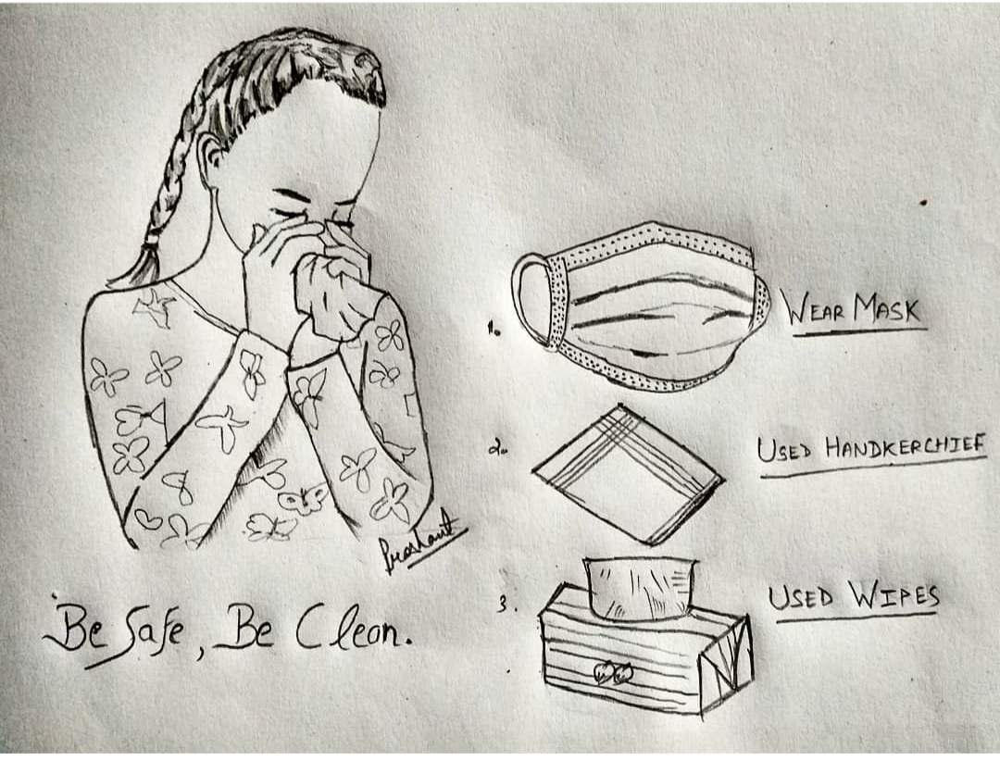
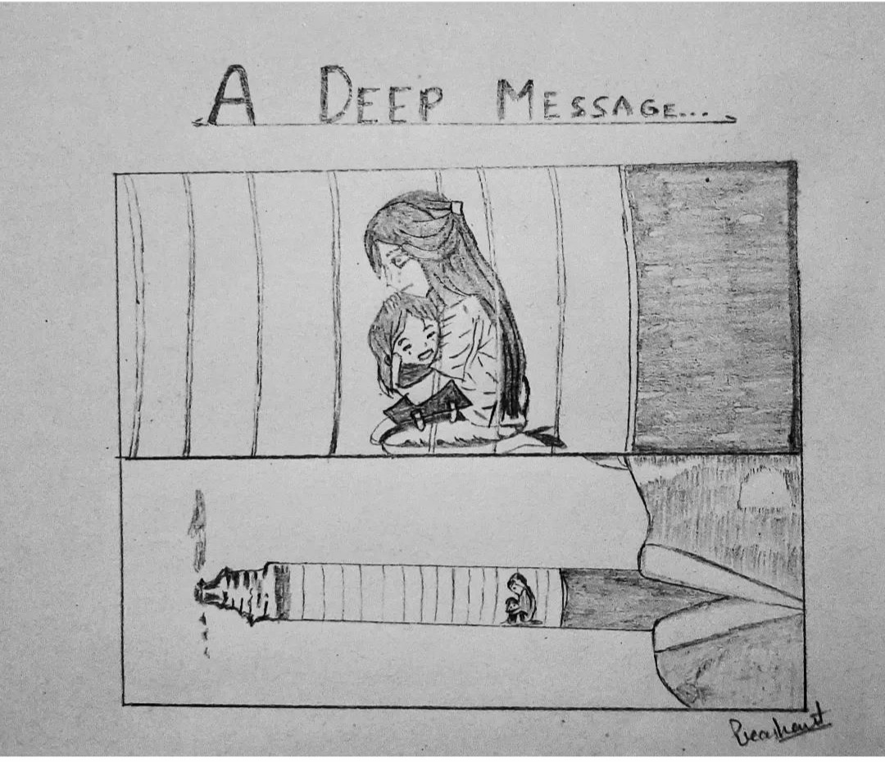
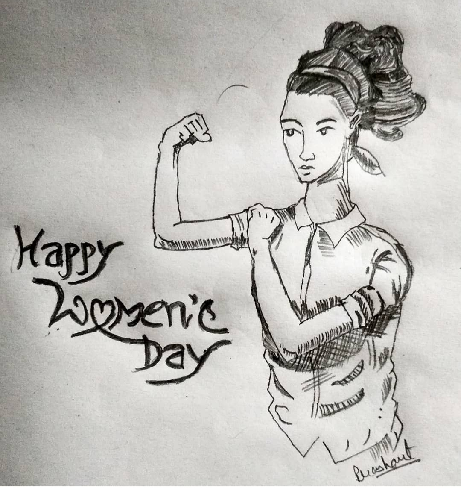
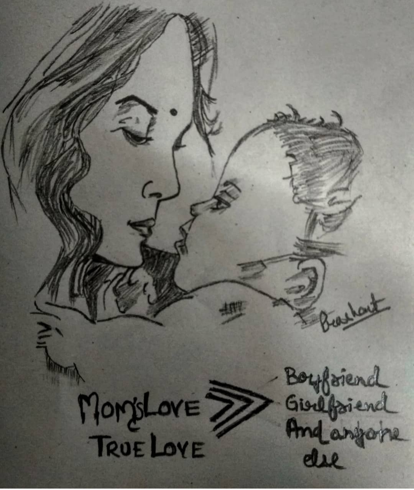
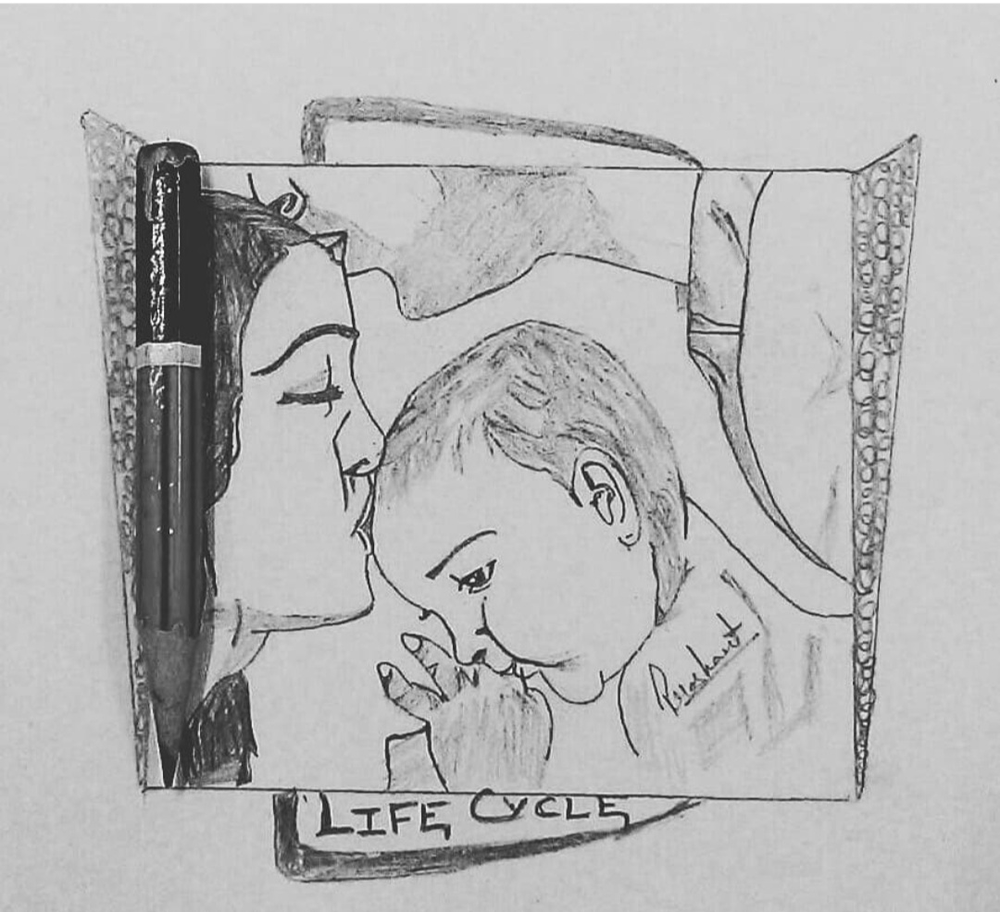
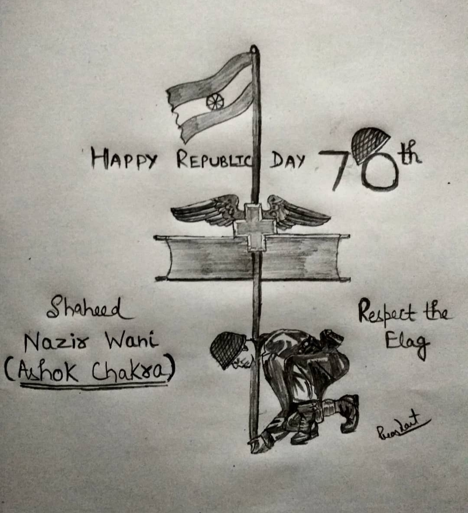
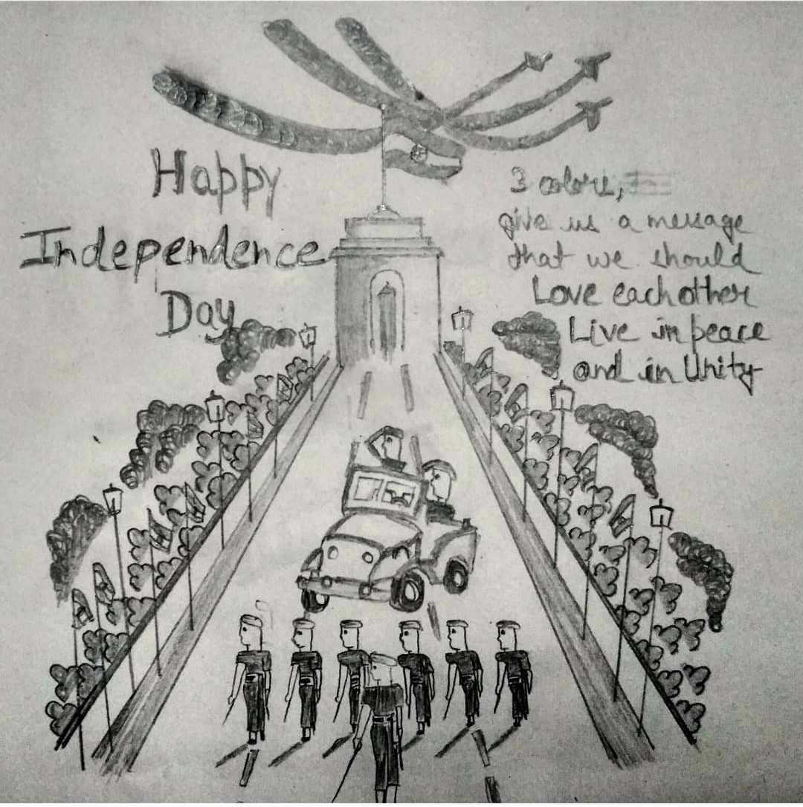

SOCIAL MESSAGE

Coronavirus Disease("COVID 19")
From where the inspiration came from-
As the corona cases are incresing day by day in all over the world and I personally see many people around us are not taking any precautions so at that point I sketch this and post to instagram, facebook and whatsapp to be inside and take precautions to overcome this disaster disease.

Tobacco Kills
From where the inspiration came from-
One of my friend reading the text ,state that more than 8 million people died every year after consuming tobacco.After listerning this it stuck in my mind and think it's important to sketch about this because tobacco not only kills the person but also kills and affect whole family too.

International Women's Day
International Women's Day is a global holiday celebrted anually on March 8 to commemorate the culture,plolitics and socialeconomic achivements of women. It is also a focal point in the women's right movement,bringing attention to issues such as gender equality, reproductive rights, and voilence and abuse against women.

Unconditional Love-"MOTHER"
We are born with our mother's stomach.The love and care she develops for her starts to develop inside her womb is immense and incredible.What she sacrafices and goes through during her preganancy is insurmountable,the pain she endures during her labour is intolerable.She devotes her whole life for the welfare of her child and that too without any greedof reward.But it's a bitter irony that a children start to grow up,they tend to consider opinions of their mothers as less and less significant day by day which should never be the reality of our society because if a Mother is the only person who loves you uncontionally.

Life Cycle-FAMILY
From where the inspiration came from-
One day with my father I visited Old Folks to distribute biscuits and fruits.The situation is that, there children left them there only and few of them are homeless.I see the pain in there eyes, which inspire me to make this sketch.The child's care is taken by mother and mother's care is taken by father and this cycle is universal true.And when parents get older is the duty of children to take care of them.

Republic Day
Republic Day is a public holiday in India, when the country marks and celebrates the date on which the Constitution of India came into effect on 26 January 1950, replacing the Government of India Act 1935 as the governing document of India and thus, turning the nation into a newly formed republic.

Independence Day
Independence Day, in India, national holiday celebrated annually on August 15. Independence Day marks the end of British rule in 1947 and the establishment of a free and independent Indian nation. It also marks the anniversary of the partition of the subcontinent into two countries, India and Pakistan, which occurred at midnight on August 14–15, 1947.